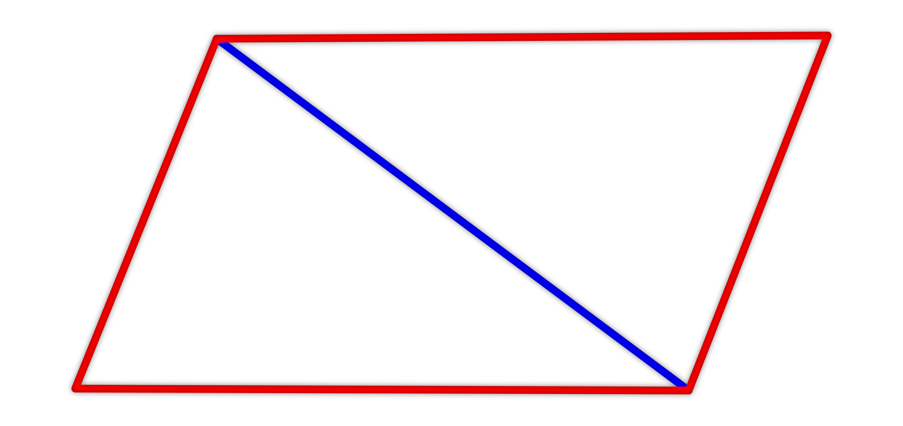
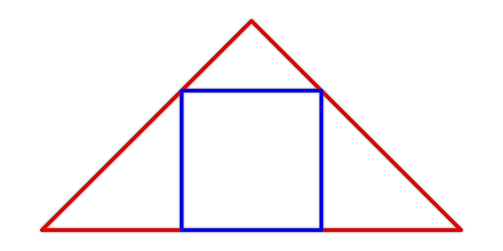
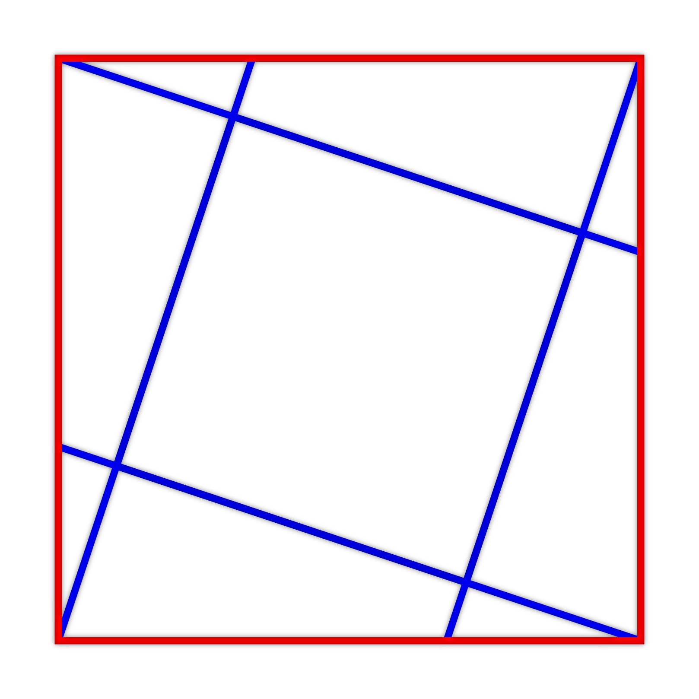

Je dán kosodélník. Jeho kratší strana je dlouhá 10 cm. Délka výšky k delší straně kosodélníku je 8 cm. Kratší z úhlopříček je dlouhá 17 cm. Určete obvod a obsah tohoto kosodélníku.
Hledejte vhodné využití Pythagorovy věty (může jich být použito i více).
Je dán čtverec o obsahu 18 cm². Dvěma jeho sousedními vrcholy jsou vedeny úsečky rovnoběžné s úhlopříčkami čtverce. Obě z těchto dvou úseček mají se čtvercem pouze jeden společný bod. Dále je vytvořena třetí úsečka, která obsahuje stranu čtverce, přičemž je zvolena taková strana, aby se libovolná dvojice z těchto tří úseček neprotnula na obvodu čtverce. Určete obsah celé plochy, kterou tyto tři úsečky ohraničují.
Určete délky co možná nejvíce úseček na obrázku a pokuste se určit obsah celé hledané plochy.
Je dán čtverec o obsahu 9 cm². Ve čtverci jsou vytvořeny dvě dvojice rovnoběžných úseček. Každá z těchto úseček propojuje vrchol čtverce a třetinu jedné strany (viz obrázek). Tyto čtyři úsečky ohraničují menší čtverec uvnitř. Určete obsah tohoto čtverce.
Bez nápovědy :D